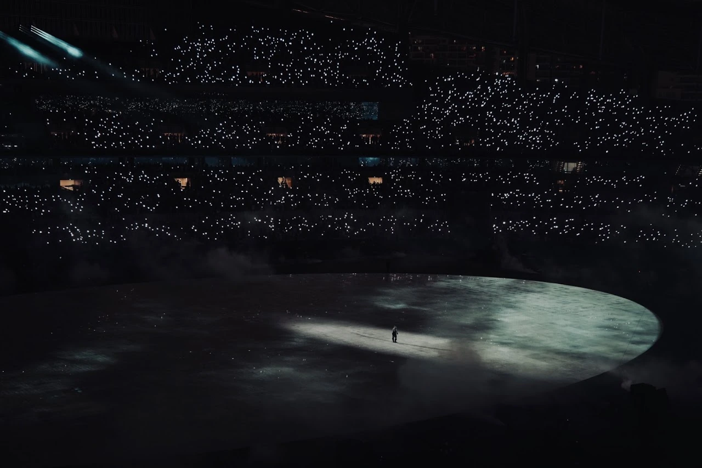

Photography series
Surface of the Moon
 Image unavailable. Open the original photograph.
Image unavailable. Open the original photograph.


This IS the surface of the Moon
Kanye Live in Shanghai

Image unavailable. Open the original photograph. Image unavailable. Open the original photograph.
Image unavailable. Open the original photograph.